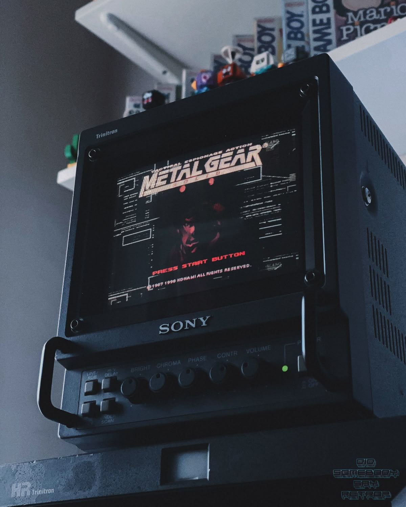
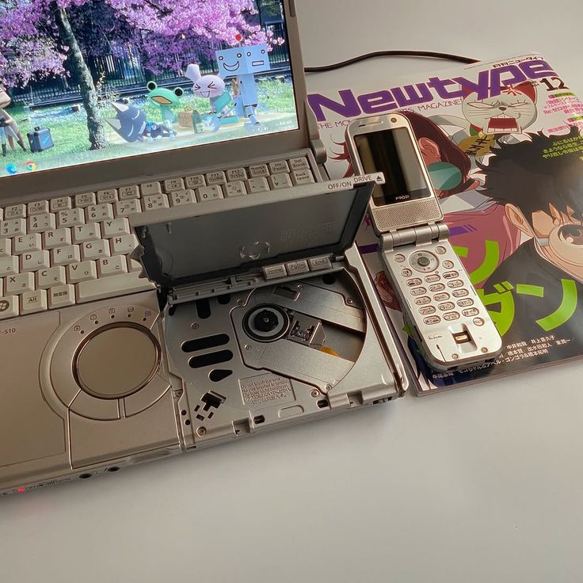
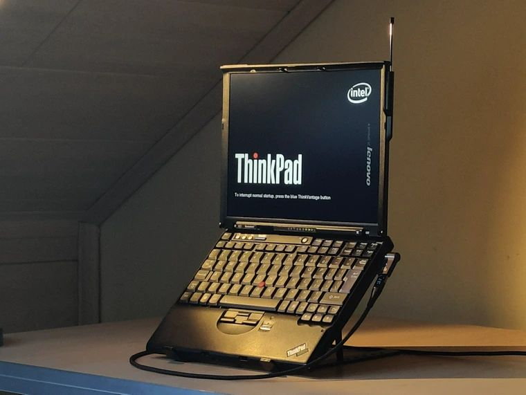
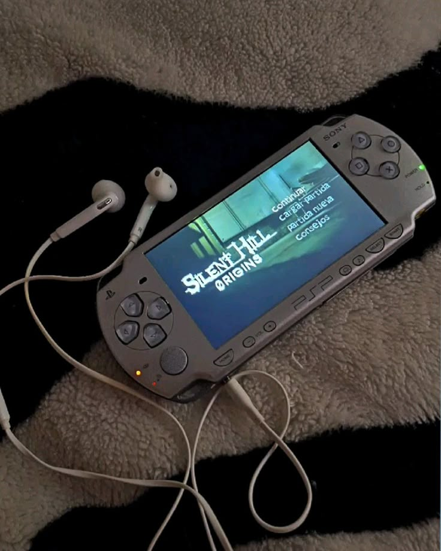
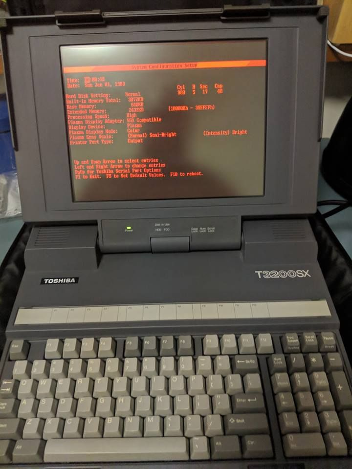

кремний и логика
Компьютерная
Компьютерная
техника
Моя страсть к технике началась с разборки старых компьютеров. Сейчас я увлекаюсь сборкой ПК, ретро-железом и механическими клавиатурами. Каждая деталь хранит свою историю, а холодный свет индикаторов вдохновляет на новые эксперименты.
custom PC · ретро-гаджеты

Любимые устройства

Panasonic CF-C9
Защищённый ноутбук «Toughbook», легендарная надёжность.

ThinkPad 235
Классическая чёрная коробка, красный трекпойнт, эргономика.

PSP
Портативная консоль, которая опередила время.

Toshiba T3200 SX
Один из первых портативных ПК, винтаж и история.
«Компьютер — это велосипед для нашего сознания»